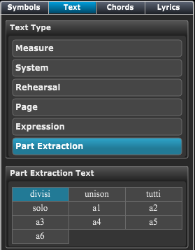

Tools Panel - Part Expression Text
Tools Panel - Part Expression Text
If Tools Panel is not showing click on the Score Tools button at top left of Control Bar and then click on the Text section in the header if it's not active.
You can also type "Ctrl[Cmd]-Shift-T" to go directly to the Text section.
When you click on the Part Expression text type an list of common expression will appear below.

Part Extraction Text is used to control how divisi tracks/instruments are extracted into separate parts.
See Creating Active Parts for more information on how to use the text.
or